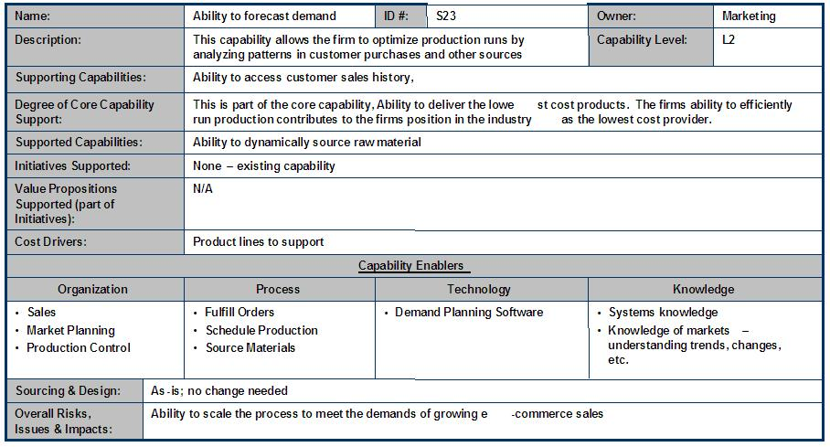
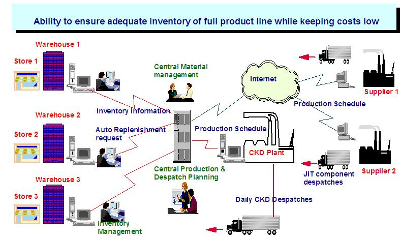

| Example: Capability Description |
 |
|
Relationships
| Related Elements |
|---|
Main Description

For more detailed design work, capability descriptions should be more detailed, taking the form of a picture, table, or text. A graphic illustrating the elements, interrelationships, and workflow can clarify the key elements to be considered in optimizing a business model design. In general, the graphic should be developed with accompanying text to clearly describe the intent of the capability. 
|
| © Copyright IBM Corp. 1987, 2012 All Rights Reserved Property of IBM These materials are intended only for use as part of an IBM engagement |